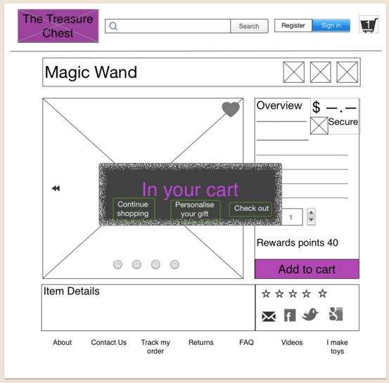
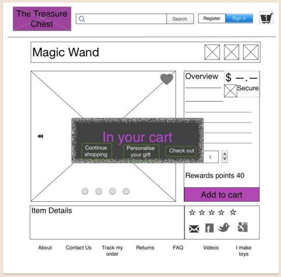

Treasure Chest
E-Commerce website
- Client
- Student Project – The Treasure Chest
- Platform
- E-Commerce Website
- Skills
- User Research
- Cardsorting
- Information Architecture
- User Testing
- Wireframes
- Prototyping
- Software
- OmniGraffle
- Keynote
- Timeframe
- 2 weeks
- Design Team
- 1 designer
The Treasure Chest - Building an E-Commerce Website
The Treasure Chest is a retailer of toys, games, and magic tricks. For over 30 years it has successfully focused on traditional toys, but have moved with the times and now offers a full range of new and vintage products to appeal to children and adults alike. They are looking for an e-commerce site to be developed.
Project Overview
This student project involved aspects of user research, producing low fidelity wire frames and working with opposing stakeholder goals. Our task was to research the client's market to help propose a bespoke e-commerce website which we would then test and iterate upon accordingly.
Competitive Analysis
Understanding the current market was imperative in order to the competition The Treasure Chest would have. I researched big brands, small brands and special players in an e-commerce setting.

Personas
Stakeholder Interviews
I interviewed the Stakeholders to gain insight from their extensive knowledge about their business and it's needs, to the customer experiences they currently offered. I asked about their future plans along with their biggest pain points from their standpoint and their customers.
Design Development
The shop had a large catalogue of products and the first step was to organise them into likely categories. Multiple sortings and iterations later I had a common themed category map.
Synthesis
Using the already existing personas, the competitive analysis and the stakeholder interviews, I brought all of the relevant points together and came up with some basic sketches.
User testing the sketches
Users told me they were unsure of how to browse, they could see how to search for something specific but wanted to get inspiration for a purchase. The low fidelity wireframes (below) show the changes that were made.
"How do I keep up with what’s going on in store? E.g. what’s new in?"
"I can’t find where to browse the shop?"
Low Fidelity Wireframes
"Simple layout, not too much detail. Easy to use"
"Easy to follow. I can achieve what I want"
"I love that I can see all the new arrivals and events"
"I like the browser at the top of the page"
Final Example Wireframes
 
